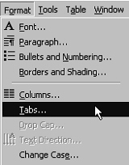
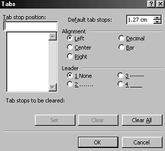
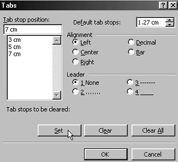
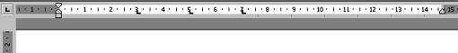
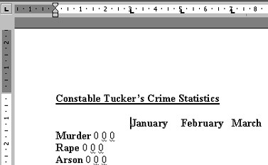
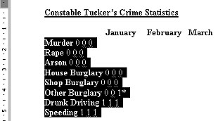
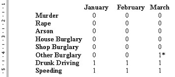

Free
computer Tutorials
|
Free
computer Tutorials
|
|
 home home |
|
||||
|
Setting Tab Positions in Microsoft WordA Tab in word processing terms is the jump your cursor makes from one position to another when you press the tab key on your keyboard. Your tab key looks like this: Press the tab key on your keyboard and watch what happens. You'll see the cursor jump from left to right in your document. You can control how far the cursor jumps when you press the tab key on the keyboard. But why would you want to? You typically set tab stop positions for things like indenting the first line of a paragraph, or if you wanted text to start three or four centimetres along the line. We're going to set three tab stops for our line of text with the months of the year. If you haven't been working on the Crime Statistics document, click below to download a copy Click here to download the document you'll need for this section. With your Crime Statistics document open, do the following:
 When you click on Tabs, the following dialogue box will appear:  The area to concentrate on is Tab stop position, right at the top. When you want to set a tab stop, you type in a number in the text box below the words "Tab stop position". Then you press the "Set" button. We are going to set tab stop positions at 3, 5 and 7 centimetres from the left hand side.
When you are finished, your Tab dialogue box should look like this  Click the OK button when you have finished. With your cursor still flashing before the J of January, your top ruler bar will look like this:  Notice the three L-shaped lines on your ruler bar. These are your three tab stop positions. To move your text along, position your cursor before the J of January. Press the tab key on your keyboard. The entire line will shift to right, and January will now be lined up with your first tab stop at position 3. Position your cursor before the letter "F" of February, and then press your tab key again. February will be lined up with your second tab stop at position 5. Position your cursor before the letter "M" of March, and
then press your tab key again. March will be lined up with your third
tab stop at position 7. Your document will now look like this  You can see that the three months are line up with the three tab stops in the ruler bar at the top. Now move your cursor down one line and watch what happens to the ruler bar at the top. The tab stops have vanished! The tab stops have vanished because we only set them for one line -
the months of the year line. To set tab stops for the numbers, highlight
the same area of text as in the image below  When your text is highlighted, click on Format > Tabs again to bring up the tabs dialogue box. Set three tabs at the following tab stop positions: 3.5, 5.5, 7.5 centimetres. When you're finished, every line in the highlighted area will have
tab stops at those three positions. You now need to shift the numbers
across so that one number is underneath one month. So position your
cursor before the first number and press your tab key. Position your
cursor before the second number and press your tab key. Position your
cursor before the third number and press your tab key. Do that for every
line of numbers. When you're done, it should look like this one 
I'm sure you'll agree that Constable Tucker's statistics are looking a lot tidier. We can do something else, though, and that's add some bullets to the list of crimes. After all, what crime list would be complete without bullets! Click here to move on to setting up Bullets in a Word document--> |
|||||
|